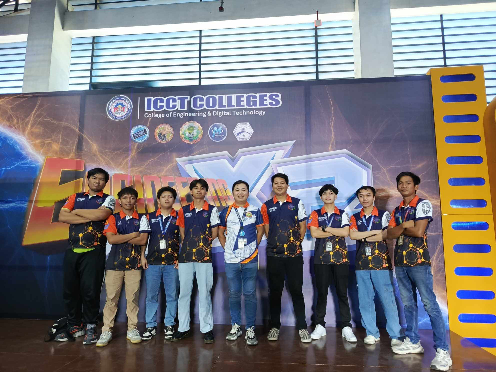

My Recent Work


A passionate Front-End Developer focused on building beautiful and accessible web experiences.
My name is Daryll, and I am a dedicated Front-End Developer with a strong focus on creating user-friendly interfaces and clean, efficient code. I believe that every web experience should be both visually appealing and highly accessible.
I have experience working with modern web technologies, converting design mockups into pixel-perfect, responsive websites. I am constantly learning new frameworks and tools to stay ahead in the rapidly evolving digital landscape.
Download CV
Let's collaborate and bring your digital vision to life.
Contact Me Now →